Tutorial de manejo de Visual Zero VM |
Read this document in english |
Visual Zero VM es la misma máquina virtual que la herramienta de línea de comando zvm ("Zero Virtual Machine", Máquina virtual Zero), con una interfaz gráfica, lo que permite una mayor interacción por parte del usuario y obtener el máximo partido de las posibilidades de reflexión estructural de la máquina virtual.
Para comenzar, es necesario desempaquetar el archivo binario de Zero (para su plataforma) en un directorio, si no se ha hecho ya. Además, es necesario compilar la librería estándar, lo cuál hay que hacer una vez descomprimido el paquete. Ésto puede conseguirse abriendo una consola de comandos en la carpeta donde reside Zero y tecleando:
za IntStdLib
|
También es posible intentar soltar el archivo IntStdLib
sobre el ejecutable za. En algunos sistemas (linux, unix y
similares), es necesario dar permisos de ejecución a los archivos con
funcionalidad:
chmod +x za
|
Una vez hecho ésto, intente compilar de nuevo la librería estándar si anteriormente este paso falló.
Sólo es necesario compilar la librería estándar una vez.
El programa Visual Zero VM es "vzero.exe", que puede ejecutarse desde una consola de línea de comando:
vzero
|
o haciendo doble-clic sobre el programa en la carpeta donde se ha descomprimido Zero.
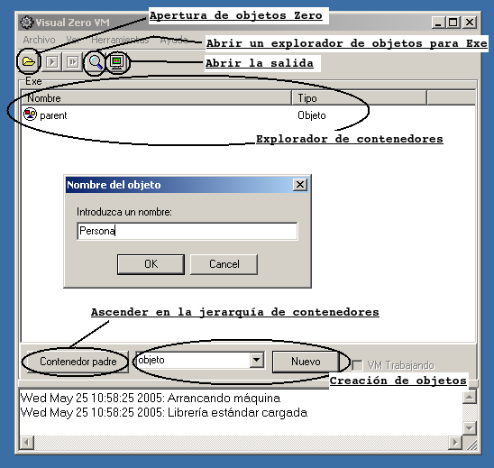
Todos los posibles valores que puedan manejarse en la máquina virtual Zero son objetos. Al contrario que en otros sistemas orientados a objetos, no existen datos "primitivos", sino que son representados mediante objetos. En Zero, pueden utilizarse enteros, flotantes, cadenas y vectores en cuanto a datos primitivos, pero téngase en cuenta que son representados mediante objetos y no mediante otras técnicas.
Debajo del explorador de contenedores se encuentra una caja con menú deslizante que originalmente indica "objeto" y un botón que indica nuevo. Basta elegir "entero" en el menú deslizante de la caja y pulsar en "nuevo" para crear un objeto con un valor entero asociado. El programa preguntará el valor numérico del objeto antes de crearlo, y aparecerá en el contenedor Exe.
Lo mismo sucederá con los flotantes y las cadenas. El caso de los vectores es un poco más especial.
Al seleccionar "vector" y pulsar "nuevo", se abrirá una caja de diálogo preguntando por el contenido. El vector más sencillo posible es el vector vacío (sin elementos) que se indica de la siguiente forma:
{}
|
En cambio, un vector con un elemento se indica con:
{ 1 }
|
... creando un vector que contendría un valor entero. Su logntiud sería 1, y el índice del primer elemento, 0.
Para introducir varios elementos, éstos se separan por comas:
{ 1, 2, 3 }
|
Es necesario tener en cuenta que los vectores pueden contener referencias a cualquier objeto, no es necesario que todos los elementos de un vector "pertenezcan" al mismo "tipo". Por ejemplo:
{ 1, "hola", 2.0 }
|
Es incluso posible incluir otros vectores:
{ 1, { 3, 4 }, 2.0 }
|
Haga clic encima del objeto a eliminar en el explorador de contenedores, haga clic con el botón derecho del ratón y seleccione "eliminar". Nótese que ésto sólo elimina al objeto del contenedor, será realmente borrado si no está siendo referenciado por ningún otro objeto.
Arranque el programa y pulse "nuevo" con "objeto" seleccionado en los controles debajo del explorador de contenedores.
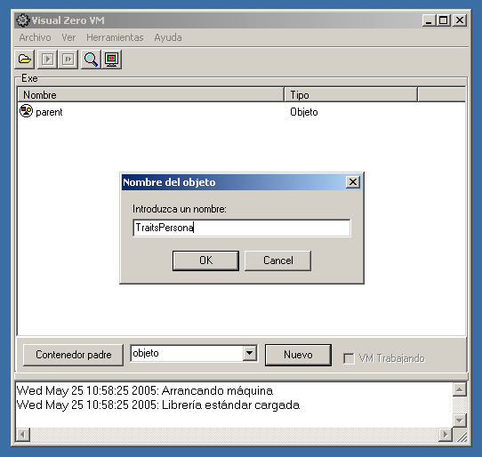
Se le pedirá el nombre del objeto. Introduzca "TraitsPersona" (sin las comillas). Haga doble-clic en TraitsPersona. Aparece entonces el explorador de objetos, dividido en tres secciones: los atributos del objeto, en la parte superior; los métodos del objeto, en el medio; y finalmente los métodos heredados, en la parte inferior.
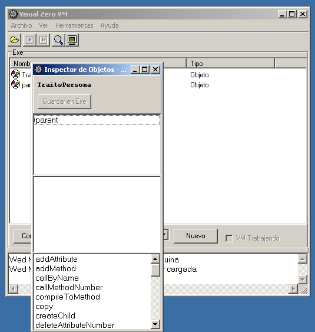
En los métodos heredados, busque "addAttribute". Haga clic encima del mismo y después, con el botón derecho, seleccione "ejecutar".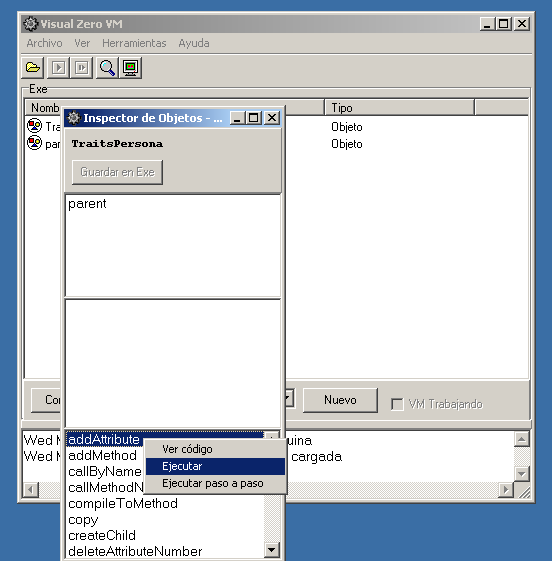
Aparecerá un nuevo cuadro de diálogo pidiendo los argumentos. Se trata del nombre del atributo, que en este caso es el nombre de la persona, "nombre", y el objeto al que apunta, el segundo atributo para el que introduciremos "Juan Nadie". Esta vez, será necesario introducir las comillas, ya que el programa realiza una pequeña interpretación y en caso encontrarse unas comillas, crea directamente un nuevo objeto cadena con el valor proporcionado. Una vez hecho, se pulsa en "Aceptar", y la máquina virtual ejecuta el método.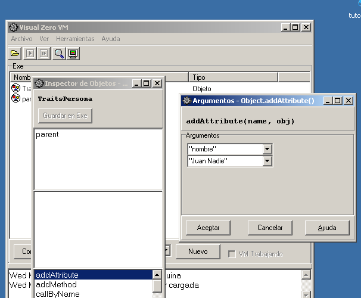
Cuando un método es ejecutado, como ahora, se visualiza la salida estándar, por si la ejecución ha volcado algo, y se abre un explorador con el objeto que ha devuelto el método, que en este caso no es demasiado interesante. Es conveniente cerrar la salida, y probablemente el objeto resultado de la ejecución, y volver al explorador del objeto TraitsPersona que se estaba utilizando. El nuevo atributo aparece en la sección de atributos del explorador de TraitsPersona. Es posible hacer doble-clic sobre él para comprobar el objeto al que apunta.De la misma forma que añadimos el atributo nombre a TraitsPersona, se añadirá el atributo "email" con valor "juan@nadie.com" (recuerde utilizar las comillas).
El método toString existe en Object, y puede y
debe ser
sobreescrito por cada nuevo objeto para codificar información
relevante en una
cadena de caracteres. La versión de Object sólo devuelve
el nombre del objeto (o su valor, si es un entero, un flotante, una cadena
o incluso un
vector (devolviendo el resultado de invocar toString por
cada elemento)). Para personas, sería interesante devolver una cadena
con su información más relevante.
Ahora, necesitaremos por tanto crear un método toString para
TraitsPersona. El método
toString es llamado cuando, por ejemplo, se intenta mostrar un objeto por
consola. Debe se posible devolver la información contenida en el
objeto de
manera simple.
Busque el método addMethod y seleccione con el botón derecho del ratón "ejecutar". Aparecerá la misma ventana de diálogo que con los atributos. Esta vez es necesario proporcionar el nombre del método y los argumentos (en forma de vector). El primero es "toString" (comillas incluidas) y el segundo, ya que el método no implica uso de parámetros, {}
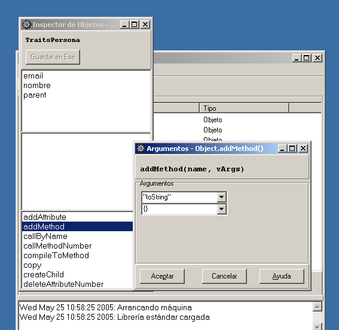
Una vez creado, aparecerá en la sección de métodos del objeto. Haciendo doble-clic sobre él, aparece el editor de código, donde tecleamos el siguiente código ensamblador Zero:
SET nombre
|
Este código ensamblador símplemente pone el objeto apuntado por el atributo nombre en el registro de retorno (__rr), para después concatenarle un literal (": ") y más tarde el e.mail, para finalmente devolverlo todo.
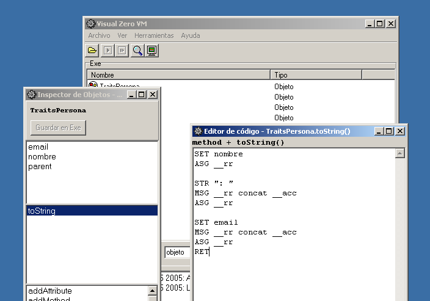
Una vez hecho, se hace clic sobre compilar, debiendo aparecer el mensaje "compilación realizada con éxito". Una vez compilado, haga clic sobre descartar.Puede ejecutar el nuevo método de la misma forma que se han ejecutado cualquiera de los otros: con la opción del botón derecho del ratón sobre el método "ejecutar". Si lo hace, obtendrá un nuevo objeto cadena:
Juan Nadie: juan@nadie.com
|
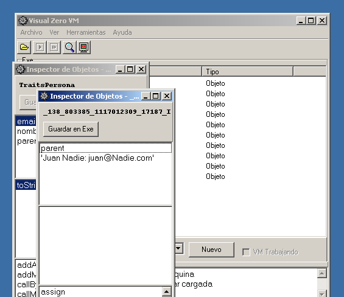
... el cual puede descartar (cerrando su explorador). Se ha comprobado que el método recién creado funciona.Será interesante crear un par de métodos más. Estos podrían ser "setNombre" con argumentos { "n" }, y "setEmail" con argumentos { "e" }. Una vez creados, introduzca el siguiente código para cada uno de ellos.
method + setNombre(n)
|
method + setEmail(e)
|
|
|
|
|
|
SET n
|
SET e
|
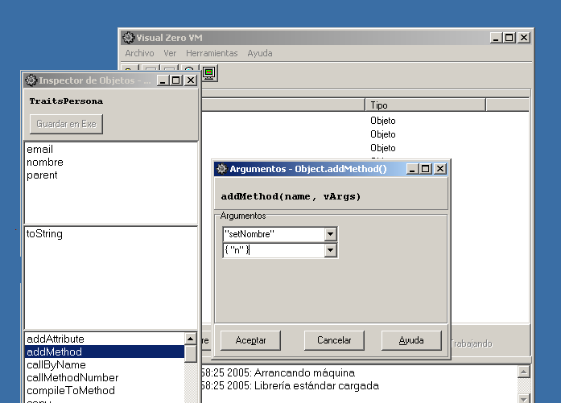
Este código ensamblador símplemente asigna el objeto pasado como argument a los atributos nombre e email. Estamos asumiendo que el objeto recibido en cada función como argumento es una cadena con la información correcta. Podemos asegurarnos de que al menos el objeto recibido es una cadena colocando entre las instrucciones SET y ASG de cada método las siguientes instrucciones:
IOF String
|
Ahora, en caso de recibir un argumento de tipo inadecuado, se lanzará una excepción.
Utilizando los controles debajo del explorador de contenedores de la ventana principal, cree un nuevo objeto, denominado "Persona" (sin las comillas).
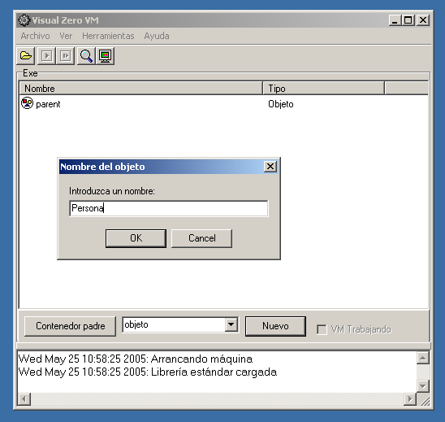
Una vez creado, haga doble-clic sobre él para que aparezca en un explorador de objetos.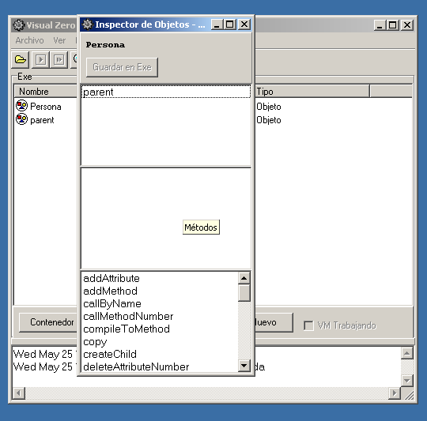
Seleccione el atributo parent, y haciendo clic con el botón derecho sobre él, una vez seleccionado el objeto, elija "cambiar".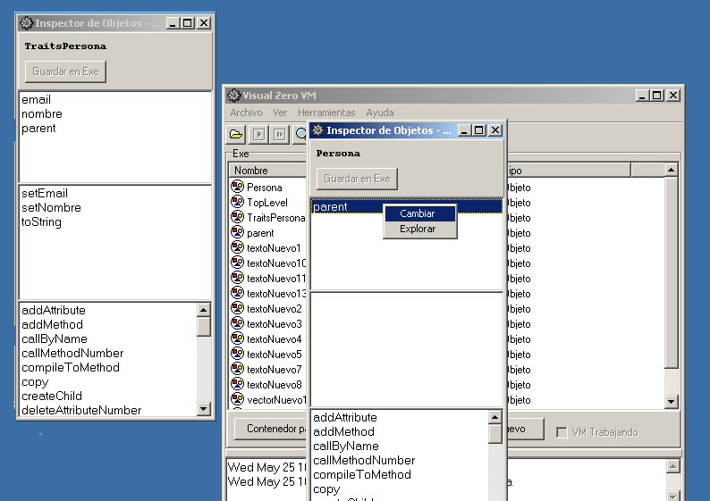
De la lista desplegable que aparece en el cuadro de diálogo de asignar objeto, seleccione TraitsPersona. Con esta acción, se acaba de crear el prototipo que será copiado para crear nuevos objetos Persona.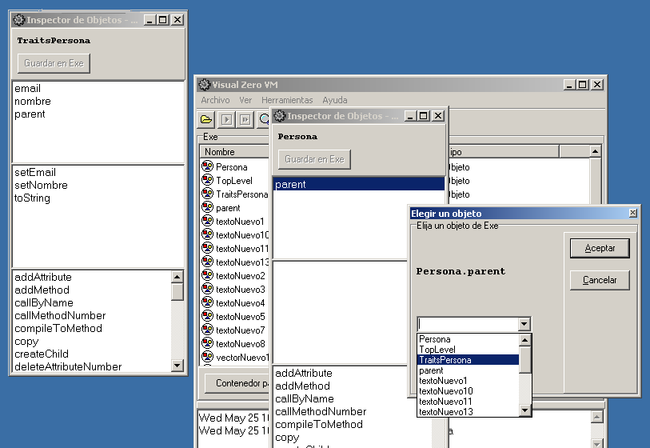
Esto puede hacerse de manera sencilla ejecutando el método copy de la lista de métodos heredados del objeto Persona. Es necesario aportar el nombre del objeto, entre comillas. Para un ejemplo de persona con uno de los desarrolladores de Zero, el nombre podría ser "personaBaltasar". Una vez creado, el objeto aparece con un explorador de objetos. Este objeto no está ligado a ningún contenedor, por lo que si desea descartarlo será destruido en cuanto cierre su explorador de objetos, mientras que si desea conservarlo deberá pulsar en su botón "Guardar en Exe", con lo que ya aparecerá en el explorador de contenedores.
Nótese que es posible evitar tener por separado TraitsPersona y Persona, y copiar directamente el objeto que proporciona estado y comportamiento. Sin embargo, hacer ésto sería poco óptimo, puesto que cada vez que se copiara el objeto se estarían copiando todos sus métodos. Esto puede no tener importancia en el contexto de este tutorial, pero sí en el contexto de una aplicación,
Siguiendo con el objeto "personaBaltasar", debemos ejecutar sus métodos setNombre y setEmail para que los datos de este objeto sean los correctos. Así, el argumento a pasar a cada uno de ellos sería "Baltasar" y "jbgarcia@nospampofavo.uvigo.es", respectivamente e incluyendo las comillas. Fíjese que los atributos nombre y email aparecen ahora como parte del objeto personaBaltasar. Esto es así porque mientras no sean modificados se comparten los mismos atributos que con TraitsPersona, pero en cuanto se modifican, son duplicados en el objeto que intenta escribir en ellos. Se trata de una técnica Copy-On-Write, que sólo realiza la duplicación cuando es estrictamente necesario.
Si ejecutamos el método toString de personaBaltasar, se obtiene lo siguiente:
Baltasar: jbgarcia@nospampofavo.uvigo.es
|
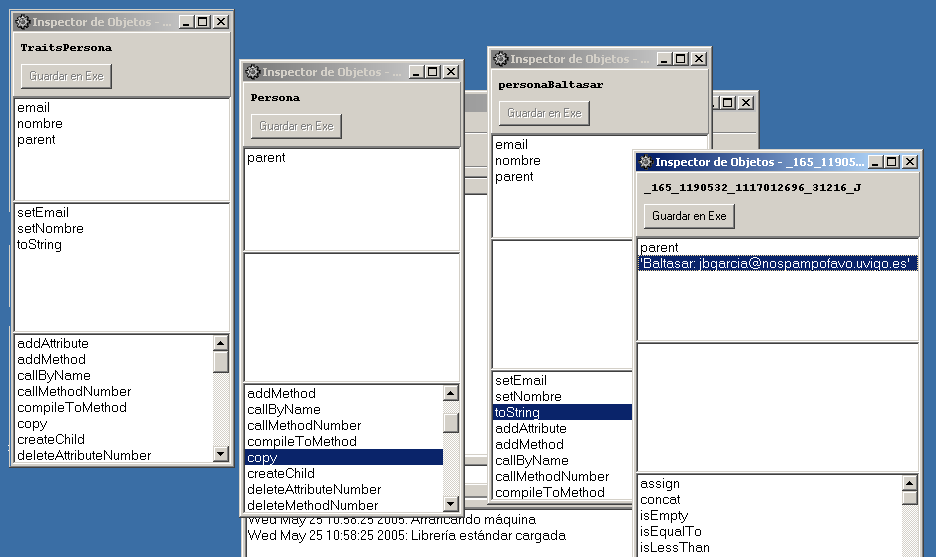
A continuación podríamos realizar un ejercicio de herencia. Cree un nuevo objeto al que llamará TraitsEmpleado, usando el método createChild del objeto TraitsPersona. Esto creará un objeto vacío con su atributo parent apuntando a TraitsPersona.Cree el atributo "salario" tal y como se ha descrito (ejecutando el método addAttribute). Por ahora, le asignaremos un valor 0. Esto quiere decir que en el campo nombre debe escribir "salario" (con comillas, pues es un valor de cadena), y como argumento, 0 (en este caso, sin comillas, ya que es un valor numérico).
Cree el método "setSalario" mediante addMethod. Debe indicar { "s" } como vector de argumentos para el método. El cuerpo del método será el siguiente:
SET s
|
A continuación, debemos crear un nuevo método toString para TraitsEmpleado:
MSG __this ^toString
|
Mediante el primer mensaje a __this (registro que referencia al objeto que está ejecutando el método), con ^toString, se asegura que será llamado el método toString de TraitsPersona. Sólo es necesario ahora concatenar el salario.
Ya sólo es necesario crear un nuevo objeto Empleado, al que se cambiará su atributo parent para que apunte a TraitsEmpleado. Los nuevos objetos de empleados se crearán mediante copia de Empleado.
Veremos un ejemplo de herencia dinámica. Abra el explorador de objetos para personaBaltasar y cambie su atributo parent para que apunte a TraitsEmpleado, en lugar de a TraitsPersona. Como resultado, mientras se mantienen los miembros que fueron creados para la persona, podemos ahora ejecutar setSalario para indicar un nuevo salario y, por supuesto, toString para obtener toda la información almacenada.
Por supuesto, es posible revertir el cambio y devolver personaBaltasar a heredar de Persona volviendo a cambiar el atributo parent. Si se ha dado valor a su salario, este evidentemente sguirá existiendo, aunque no se utilizará para obtener los datos del objeto mediante toString.
Puede verse a continuación un diagrama con los objetos realizados en este ejercicio. La línea punteada indica el cambio de relación de parentesco de TraitsPersona a TraitsEmpleado.
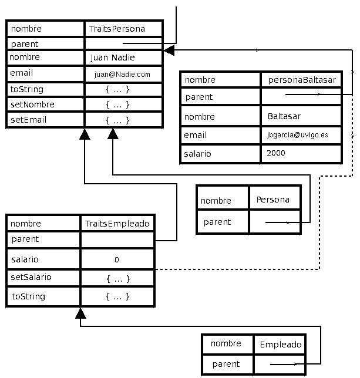